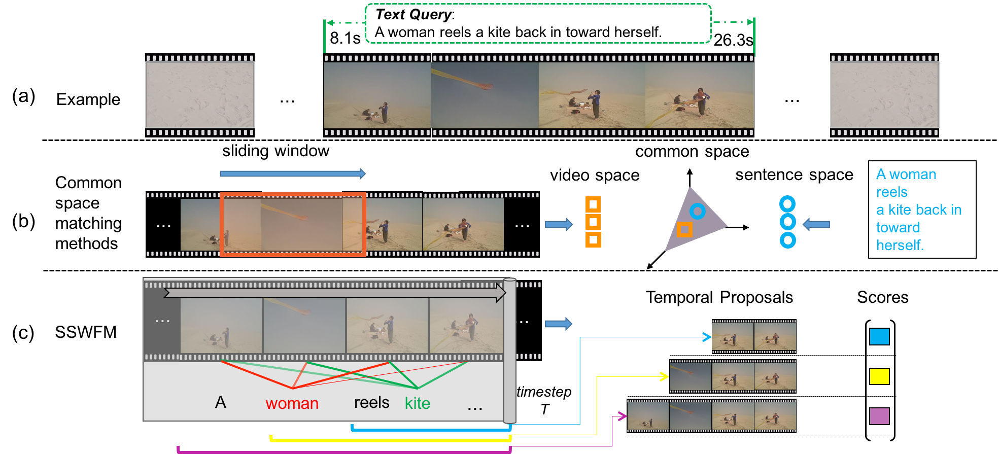

Xinpeng Chen (CV)
Email : jschenxinpeng [AT] gmail [DOT] com
I am a research intern at the Tencent AI Lab and mainly supervised by Lin Ma .
Email : jschenxinpeng [AT] gmail [DOT] com
I am a research intern at the Tencent AI Lab and mainly supervised by Lin Ma .
Research Interests
My research interests lie in the area of deep learning and multimodal learning, specifically for image and language.
Currently, I mainly focus on referring expression comprehension.
Work Experience
Nov. 2016 - Feb. 2017, Research intern, NLP Group, Hitachi Central Research Laboratory, Tokyo
Mentor: Dr. Bin Tong
Topic: Video captioning; Image paragraph description; Reinforcement learning for image captioning.
Mar. 2017 - Nov. 2018, Research intern, CV Group, Tencent AI Lab, Shenzhen
Mentor: Dr. Lin Ma, Dr. Wenhao Jiang, and Dr. Wei Liu
Topic: Image and video captioning; Large video classification; Referring expression comprehension.
Mentor: Dr. Bin Tong
Topic: Video captioning; Image paragraph description; Reinforcement learning for image captioning.
Mar. 2017 - Nov. 2018, Research intern, CV Group, Tencent AI Lab, Shenzhen
Mentor: Dr. Lin Ma, Dr. Wenhao Jiang, and Dr. Wei Liu
Topic: Image and video captioning; Large video classification; Referring expression comprehension.
Publications

Temporally Grounding Natural Sentence in Video
Jingyuan Chen, Xinpeng Chen, Lin Ma, Zequn Jie, Tat-Seng Chua
Conference on Empirical Methods in Natural Language Processing (EMNLP), Brussels, Belgium, 2018.
[PDF]
Jingyuan Chen, Xinpeng Chen, Lin Ma, Zequn Jie, Tat-Seng Chua
Conference on Empirical Methods in Natural Language Processing (EMNLP), Brussels, Belgium, 2018.
[PDF]
Regularizing RNNs for Caption Generation by Reconstructing The Past with The Present
Xinpeng Chen, Lin Ma, Wenhao Jiang, Jian Yao, Wei Liu
IEEE Conference on Computer Vision and Pattern Recognition (CVPR), Salt Lake City, USA, 2018.
[PDF] [Supplementary Material] [Code] [Poster] [Video]
Xinpeng Chen, Lin Ma, Wenhao Jiang, Jian Yao, Wei Liu
IEEE Conference on Computer Vision and Pattern Recognition (CVPR), Salt Lake City, USA, 2018.
[PDF] [Supplementary Material] [Code] [Poster] [Video]

Fine-grained Video Attractiveness Prediction Using Multimodal Deep Learning on a Large Real-World Dataset
Xinpeng Chen, Jingyuan Chen, Lin Ma, Jian Yao, Wei Liu, Jiebo Luo, Tong Zhang
The Web Conference (original WWW), The Big Web Track, Lyon, France, 2018.
[PDF]
Xinpeng Chen, Jingyuan Chen, Lin Ma, Jian Yao, Wei Liu, Jiebo Luo, Tong Zhang
The Web Conference (original WWW), The Big Web Track, Lyon, France, 2018.
[PDF]

Learning to Guide Decoding for Image Captioning
Wenhao Jiang, Lin Ma, Xinpeng Chen, Fumin Shen, Hanwang Zhang, and Wei Liu
The AAAI Conference on Artificial Intelligence (AAAI), Louisiana, USA, 2018.
[PDF]
Wenhao Jiang, Lin Ma, Xinpeng Chen, Fumin Shen, Hanwang Zhang, and Wei Liu
The AAAI Conference on Artificial Intelligence (AAAI), Louisiana, USA, 2018.
[PDF]

Aggregating Frame-level Features for Large-Scale Video Classification
Shaoxiang Chen, Xi Wang, Yongyi Tang, Xinpeng Chen, Zuxuan Wu, Yugang Jiang
YouTube-8M Large-Scale Video Understanding Challenge (CVPR Workshop), Hawaii, USA, 2017.
[PDF]
Shaoxiang Chen, Xi Wang, Yongyi Tang, Xinpeng Chen, Zuxuan Wu, Yugang Jiang
YouTube-8M Large-Scale Video Understanding Challenge (CVPR Workshop), Hawaii, USA, 2017.
[PDF]
Miscellaneous
- Research on Image Semantic Caption Generation Based on Encoder-Decoder Framework (Master Thesis). [PDF]
- Tensorflow implement of paper: A Hierarchical Approach for Generating Descriptive Image Paragraphs. [Code]
- Tensorflow implement of paper: Sequence to Sequence - Video to Text. [Code]
- Tensorflow implement of paper: Optimization of image description metrics using policy gradient methods. [Code]
- Detecting the text in natural images by SSD (Single Shot Detection). [Code]
Last Updated on 30th Oct., 2018
Published with GitHub Pages